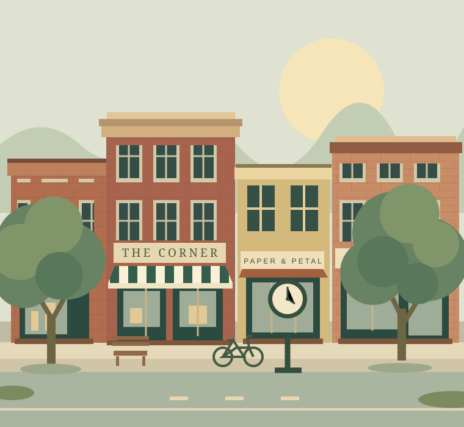

ART & CULTURE
A gallery without walls.
An Art Trail entry point brings artwork, artists and a self-guided experience together.
A SMALL TOWN. A WHOLE LOT TO DISCOVER.
A little art. Something delicious. A familiar face.
Find your kind of day in Tecumseh, Michigan.

MAKE ROOM FOR A GOOD TIME
Markets, music, and moments worth making.
Fictional events · May–June 2027 demo
FOLLOW YOUR CURIOSITY
Make space for the unexpected.
There's a different way to spend every day.
ART & CULTURE
An Art Trail entry point brings artwork, artists and a self-guided experience together.
FARMERS MARKET
A dedicated home for seasonal dates, vendor stories and application information.
SMALL BUSINESSES. BIG PERSONALITY.
Good things happen when you shop small.
Fictional businesses for demonstration
LESS SCROLLING. MORE STROLLING.
Discover the real downtown through the official visitor website. Confirm current events, opening hours and travel details before your visit.
Visit the official website ↗ (opens in a new tab)A PLACE WE BUILD TOGETHER
This concept gives downtown projects, board information and business resources a clear home alongside visitor experiences.
Find current City information ↗ (opens in a new tab)